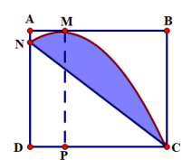
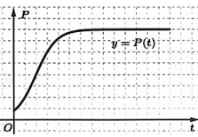

ĐỀ THI TOÁN - ĐỀ SỐ 37 HOT
Phần I: Trắc Nghiệm Nhiều Lựa Chọn
Tóm tắt kiến thức: Nguyên hàm của hàm số lũy thừa cơ số
Nguyên hàm của hàm \( f(x) = a^x \) là \( \int a^x \, dx = \frac{a^x}{\ln a} + C \), với \( a > 0 \), \( a \neq 1 \).
Câu 1:
Nguyên hàm của hàm số \( f(x) = 3^x \) là:
Chọn đáp án:
Lời giải:
Sử dụng công thức nguyên hàm: \( \int 3^x \, dx = \frac{3^x}{\ln 3} + C \).
Đáp án: C.
Tóm tắt kiến thức: Thể tích khối tròn xoay
Thể tích khối tròn xoay quanh trục \( Ox \): \( V = \pi \int_a^b [f(x)]^2 \, dx \), với \( f(x) \) là hàm xác định ranh giới vùng quay.
Câu 2:
Gọi \( D \) là hình phẳng giới hạn bởi các đường \( y = e^{2x} \), \( y = 0 \), \( x = 1 \) và \( x = 2 \). Thể tích của khối tròn xoay tạo thành khi quay \( D \) quanh trục \( Ox \) bằng:
Chọn đáp án:
Lời giải:
Thể tích khối tròn xoay: \( V = \pi \int_1^2 [e^{2x}]^2 \, dx = \pi \int_1^2 e^{4x} \, dx \).
Đáp án: A.
Tóm tắt kiến thức: Khoảng tứ phân vị
Khoảng tứ phân vị: \( Q_3 - Q_1 \), với \( Q_1 = \frac{x_{\lceil n/4 \rceil} + x_{\lceil n/4 \rceil + 1}}{2} \), \( Q_3 = \frac{x_{\lceil 3n/4 \rceil} + x_{\lceil 3n/4 \rceil + 1}}{2} \), \( x_i \) thuộc nhóm phù hợp.
Câu 3:
Cho mẫu số liệu ghép nhóm được cho ở bảng sau:

| Nhóm | \([20; 30)\) | \([30; 40)\) | \([40; 50)\) | \([50; 60)\) | \([60; 70)\) |
|---|---|---|---|---|---|
| Tần số | 3 | 7 | 6 | 4 | 5 |
Chọn đáp án:
Lời giải:
Tứ phân vị thứ nhất \( Q_1 = \frac{x_6 + x_7}{2} \), thuộc nhóm \([30; 40)\): \( Q_1 = 30 + \frac{\frac{25}{4} - 3}{7} \cdot 10 = \frac{435}{14} \).
Tứ phân vị thứ ba \( Q_3 = \frac{x_{19} + x_{20}}{2} \), thuộc nhóm \([50; 60)\): \( Q_3 = 50 + \frac{\frac{75}{4} - 16}{4} \cdot 10 = \frac{395}{8} \).
Khoảng tứ phân vị: \( Q_3 - Q_1 = \frac{395}{8} - \frac{435}{14} = \frac{395}{56} \approx 7,05 \).
Đáp án: D.
Tóm tắt kiến thức: Vector chỉ phương của đường thẳng
Vector chỉ phương của đường thẳng đi qua hai điểm \( A(x_1; y_1; z_1) \) và \( B(x_2; y_2; z_2) \) là \( \overrightarrow{AB} = (x_2 - x_1; y_2 - y_1; z_2 - z_1) \).
Câu 4:
Trong không gian \( Oxyz \), đường thẳng đi qua \( A(-1; -1; 1) \) và \( B(2; -3; 4) \) có một vector chỉ phương có tọa độ là:
Chọn đáp án:
Lời giải:
Vector chỉ phương: \( \overrightarrow{AB} = (2 - (-1); -3 - (-1); 4 - 1) = (3; -2; 3) \).
Đáp án: C.
Tóm tắt kiến thức: Tâm đối xứng của đồ thị hàm phân thức
Tâm đối xứng của đồ thị hàm \( y = \frac{ax + b}{cx + d} \) là giao điểm của tiệm cận đứng \( x = -\frac{d}{c} \) và tiệm cận ngang \( y = \frac{a}{c} \).
Câu 5:
Tâm đối xứng của đồ thị hàm số \( y = \frac{3x + 1}{x - 2} \) có tọa độ là:
Chọn đáp án:
Lời giải:
Tiệm cận đứng: \( x - 2 = 0 \Rightarrow x = 2 \).
Tiệm cận ngang: \( y = \frac{3}{1} = 3 \).
Tâm đối xứng: \( (2; 3) \).
Đáp án: D.
Tóm tắt kiến thức: Tập xác định của hàm logarit
Hàm \( y = \log_a f(x) \) xác định khi \( f(x) > 0 \).
Câu 6:
Tập xác định của hàm số \( y = \log_5 (x^2 - 2x) \) là:
Chọn đáp án:
Lời giải:
Hàm xác định khi \( x^2 - 2x > 0 \Leftrightarrow x(x - 2) > 0 \Leftrightarrow x < 0 \text{ hoặc } x > 2 \).
Tập xác định: \( (-\infty; 0) \cup (2; +\infty) \).
Đáp án: B.
Tóm tắt kiến thức: Vector pháp tuyến của mặt phẳng
Mặt phẳng \( ax + by + cz + d = 0 \) có vector pháp tuyến \( \vec{n} = (a; b; c) \).
Câu 7:
Trong không gian \( Oxyz \), cho mặt phẳng \( (\alpha): x + y - 2z - 3 = 0 \). Vector nào dưới đây là một vector pháp tuyến của mặt phẳng \( (\alpha) \)?
Chọn đáp án:
Lời giải:
Mặt phẳng \( (\alpha): x + y - 2z - 3 = 0 \) có vector pháp tuyến \( \vec{n} = (1; 1; -2) \).
Đáp án: C.
Tóm tắt kiến thức: Mặt phẳng vuông góc
Hai mặt phẳng vuông góc nếu vector pháp tuyến của chúng vuông góc. Trong hình chóp, kiểm tra các cạnh và mặt phẳng liên quan.
Câu 8:
Cho hình chóp \( S.ABCD \) có đáy \( ABCD \) là hình vuông và \( SA \perp (ABCD) \). Mặt phẳng \( (SBC) \) vuông góc với mặt phẳng nào sau đây?
Chọn đáp án:
Lời giải:
\( BC \perp AB \), \( BC \perp SA \Rightarrow BC \perp (SAB) \).
Vì \( BC \subset (SBC) \), nên \( (SBC) \perp (SAB) \).
Đáp án: C.
Tóm tắt kiến thức: Phương trình lũy thừa
Phương trình \( a^x = b \) có nghiệm \( x = \log_a b \).
Câu 9:
Nghiệm của phương trình \( 3^x = 10 \) là:
Chọn đáp án:
Lời giải:
\( 3^x = 10 \Leftrightarrow x = \log_3 10 \).
Đáp án: B.
Tóm tắt kiến thức: Cấp số cộng
Số hạng tổng quát của cấp số cộng: \( u_n = u_1 + (n-1)d \).
Câu 10:
Cho cấp số cộng \( (u_n) \) có \( u_2 = 3 \), công sai \( d = -2 \). Số hạng thứ sáu của cấp số cộng là:
Chọn đáp án:
Lời giải:
\( u_1 = u_2 - d = 3 - (-2) = 5 \).
Số hạng thứ sáu: \( u_6 = u_1 + 5d = 5 + 5 \cdot (-2) = -5 \).
Đáp án: A.
Tóm tắt kiến thức: Vector trong hình hộp
Trong hình hộp, áp dụng quy tắc tổng vector: \( \overrightarrow{AB} + \overrightarrow{AD} + \overrightarrow{AA'} = \overrightarrow{AC'} \).
Câu 11:
Cho hình hộp \( ABCD.A'B'C'D' \). Khẳng định nào đúng trong các khẳng định sau đây?
Chọn đáp án:
Lời giải:
Tứ giác \( ADD'A' \) là hình bình hành: \( \overrightarrow{AD'} = \overrightarrow{AD} + \overrightarrow{AA'} \).
\( \overrightarrow{AB} + \overrightarrow{AD'} = \overrightarrow{AB} + \overrightarrow{AD} + \overrightarrow{AA'} = \overrightarrow{AC'} \).
Đáp án: D.
Tóm tắt kiến thức: Tính đơn điệu của hàm số
Hàm số nghịch biến trên khoảng \( (a; b) \) nếu \( f'(x) < 0 \) trên \( (a; b) \).
Câu 12:
Cho hàm số \( y = f(x) \) có bảng xét dấu đạo hàm như sau:

| \( x \) | \(-\infty\) | -2 | 0 | 2 | \( +\infty \) |
|---|---|---|---|---|---|
| \( y' \) | + | 0 | - | 0 | + |
Chọn đáp án:
Lời giải:
Trên khoảng \( (0; 2) \), \( y' < 0 \), nên hàm số nghịch biến.
Đáp án: A.
Phần II: Trắc Nghiệm Đúng/Sai
Tóm tắt kiến thức: Hàm số lượng giác
Đạo hàm của \( f(x) = a \cos x + bx \): \( f'(x) = -a \sin x + b \). Giá trị lớn nhất và nhỏ nhất được xác định bằng cách xét đạo hàm và giá trị tại biên.
Câu 13:
Cho hàm số \( f(x) = 2 \cos x + x \sqrt{2} \). Xét các phát biểu sau:
Chọn đáp án cho từng phát biểu:
a)
b)
c)
d)
Lời giải:
a) Đúng. \( f(0) = 2 \cos 0 + 0 \cdot \sqrt{2} = 2 \), \( f(\pi) = 2 \cos \pi + \pi \sqrt{2} = -2 + \pi \sqrt{2} \).
b) Sai. \( f'(x) = -2 \sin x + \sqrt{2} \).
c) Đúng. \( f'(x) = 0 \Leftrightarrow -2 \sin x + \sqrt{2} = 0 \Leftrightarrow \sin x = \frac{\sqrt{2}}{2} \). Trong \( [0; \pi] \), \( x = \frac{\pi}{4} \), \( x = \frac{3\pi}{4} \).
d) Đúng. \( f\left(\frac{\pi}{4}\right) = \sqrt{2} + \frac{\pi \sqrt{2}}{4} \approx 2,52 \) (max), \( f\left(\frac{3\pi}{4}\right) = -\sqrt{2} + \frac{3\pi \sqrt{2}}{4} \approx 1,92 \) (min). Tổng: \( \sqrt{2} + \frac{\pi \sqrt{2}}{4} + (-\sqrt{2} + \frac{3\pi \sqrt{2}}{4}) = \pi \sqrt{2} \).
Đáp án: a) Đúng, b) Sai, c) Đúng, d) Đúng.
Tóm tắt kiến thức: Diện tích mặt cầu và tỷ lệ
Diện tích mặt cầu: \( S = 4\pi R^2 \). Tỷ lệ diện tích nhìn thấy được tính dựa trên công thức \( S_T = 2\pi R^2 \left(1 - \frac{R}{R+h}\right) \).
Câu 14:
Ta coi Trái Đất là hình cầu hoàn hảo với bán kính \( R = 6370 \, \text{km} \) và diện tích toàn phần là \( S = 4\pi R^2 \). Các phi hành gia từ tàu vũ trụ chỉ có thể nhìn thấy một phần bề mặt Trái Đất. Ở độ cao \( h \), phần diện tích Trái Đất các phi hành gia có thể nhìn thấy được tính theo công thức \( S_T = 2\pi R^2 \left(1 - \frac{R}{R+h}\right) \). Gọi \( K \) là tỷ số diện tích bề mặt Trái Đất nhìn thấy được ở độ cao \( h \) với diện tích toàn phần của Trái Đất. Xét các phát biểu sau:
Chọn đáp án cho từng phát biểu:
a)
b)
c)
d)
Lời giải:
a) Sai. \( K = \frac{S_T}{S} = \frac{2\pi R^2 \left(1 - \frac{R}{R+h}\right)}{4\pi R^2} = \frac{1}{2} \left(1 - \frac{R}{R+h}\right) \).
b) Sai. Tại \( h = 280 \, \text{km} \), \( K = \frac{1}{2} \left(1 - \frac{6370}{6370 + 280}\right) \approx 0,021 \approx 2,1\% \).
c) Sai. \( K = \frac{1}{4} \Rightarrow \frac{1}{2} \left(1 - \frac{R}{R+h}\right) = \frac{1}{4} \Rightarrow \frac{R}{R+h} = \frac{1}{2} \Rightarrow h = R = 6370 \, \text{km} \).
d) Đúng. \( K'(h) = \frac{1}{2} \cdot \frac{R}{(R+h)^2} > 0 \), \( K \) tăng. \( \lim_{h \to +\infty} K = \frac{1}{2} = 50\% \).
Đáp án: a) Sai, b) Sai, c) Sai, d) Đúng.
Tóm tắt kiến thức: Tích phân và tối ưu hóa
Tổng số ngày công: \( M(t) = \int_0^t m(t) \, dt \), với \( m(t) \) là số công nhân. Tìm cực trị bằng đạo hàm.
Câu 15:
Một công trình xây dựng dự kiến hoàn thành trong 100 ngày. Gọi \( M(t) \) là số ngày công được tính đến hết ngày thứ \( t \). Biết rằng \( M'(t) = m(t) \) với \( m(t) = 100 + 12\sqrt{t} - 2t \) (\( 0 \leq t \leq 100 \)). Xét các phát biểu sau:
Chọn đáp án cho từng phát biểu:
a)
b)
c)
d)
Lời giải:
a) Đúng. \( m(4) = 100 + 12\sqrt{4} - 2 \cdot 4 = 116 \).
b) Sai. \( m'(t) = \frac{6}{\sqrt{t}} - 2 = 0 \Rightarrow \sqrt{t} = 3 \Rightarrow t = 9 \). Số công nhân nhiều nhất tại \( t = 9 \).
c) Đúng. \( M(16) = \int_0^{16} (100 + 12\sqrt{t} - 2t) \, dt = \left[100t + 8t^{3/2} - t^2\right]_0^{16} = 1856 \).
d) Đúng. \( M(100) = \int_0^{100} (100 + 12\sqrt{t} - 2t) \, dt = \left[100t + 8t^{3/2} - t^2\right]_0^{100} = 8000 \). Chi phí: \( 8000 \cdot 500.000 = 4 \, \text{tỷ đồng} \).
Đáp án: a) Đúng, b) Sai, c) Đúng, d) Đúng.
Tóm tắt kiến thức: Xác suất và công thức Bayes
Xác suất có điều kiện: \( P(B|A) \). Công thức Bayes: \( P(A|B) = \frac{P(A)P(B|A)}{P(B)} \), với \( P(B) = P(A)P(B|A) + P(\bar{A})P(B|\bar{A}) \).
Câu 16:
Ở một khu rừng nọ có 7 chú lùn, trong đó có 5 chú luôn nói thật, 2 chú còn lại nói thật với xác suất 0,5. Một nàng Bạch Tuyết lạc vào trong rừng và gặp một chú lùn. Gọi \( A \) là biến cố: “Chú lùn gặp được luôn nói thật”. Gọi \( B \) là biến cố: “Chú lùn đó nhận mình là người luôn nói thật”. Xét các phát biểu sau:
Chọn đáp án cho từng phát biểu:
a)
b)
c)
d)
Lời giải:
a) Đúng. \( P(A) = \frac{5}{7} \), \( P(\bar{A}) = \frac{2}{7} \).
b) Sai. \( P(B|A) = 1 \) (chú lùn luôn nói thật sẽ nhận mình nói thật).
c) Đúng. \( P(B) = P(A)P(B|A) + P(\bar{A})P(B|\bar{A}) = \frac{5}{7} \cdot 1 + \frac{2}{7} \cdot 0,5 = \frac{6}{7} \).
d) Đúng. \( P(A|B) = \frac{P(A)P(B|A)}{P(B)} = \frac{\frac{5}{7} \cdot 1}{\frac{6}{7}} = \frac{5}{6} \).
Đáp án: a) Đúng, b) Sai, c) Đúng, d) Đúng.
Phần III: Trắc Nghiệm Trả Lời Ngắn
Tóm tắt kiến thức: Khoảng cách giữa hai đường thẳng
Khoảng cách giữa hai đường thẳng chéo nhau bằng khoảng cách từ một điểm trên đường này đến mặt phẳng chứa đường kia và song song với đường còn lại.
Câu 17:
Cho lăng trụ đều \( ABC.A'B'C' \) có đáy là tam giác vuông và \( AB = BC = a \), \( AA' = a\sqrt{2} \). \( M \) là trung điểm của \( BC \). Khoảng cách \( d \) giữa hai đường thẳng \( AM \) và \( B'C \) được viết dạng \( d = \frac{a\sqrt{m}}{n} \), \( m, n \in \mathbb{Z} \). Khi đó tổng \( m + n \) bằng bao nhiêu?
Nhập đáp án:
Lời giải:
\( \triangle ABC \) vuông cân tại \( B \). Gọi \( N \) là trung điểm \( BB' \), \( B'C \parallel (AMN) \).
\( d(AM, B'C) = d(B, (AMN)) \). Kéo \( BH \perp AM \) tại \( H \), \( BK \perp NH \) tại \( K \).
\( BH = \frac{BM \cdot BA}{\sqrt{BM^2 + BA^2}} = \frac{\sqrt{5}a}{5} \), \( BK = \frac{BH \cdot BN}{\sqrt{BH^2 + BN^2}} = \frac{a\sqrt{7}}{7} \).
\( d = BK = \frac{a\sqrt{7}}{7} \Rightarrow m = 7 \), \( n = 7 \). Tổng: \( m + n = 14 \).
Đáp án: 14.
Tóm tắt kiến thức: Tối ưu hóa chi phí
Giải bài toán tối ưu bằng cách xét miền nghiệm của hệ bất phương trình và tính giá trị hàm mục tiêu tại các đỉnh.
Câu 18:
Phòng chăm sóc khách hàng của công ty A làm việc từ 8h00 sáng đến 20h00 mỗi ngày. Nhân viên trực tổng đài làm việc theo 2 ca, mỗi ca 8 tiếng, ca I từ 8h00 đến 16h00 và ca II từ 12h00 đến 20h00. Tiền lương của nhân viên được tính theo giờ:
| Khoảng thời gian làm việc | Tiền lương/giờ |
|---|---|
| 8h00–16h00 | 32.000 đồng |
| 12h00–20h00 | 30.000 đồng |
Nhập đáp án:
Lời giải:
Gọi \( x \): số nhân viên ca I, \( y \): số nhân viên ca II. Hệ bất phương trình:
\( \begin{cases} 0 < x \leq 9 \\ y \geq 2 \\ x + y \geq 10 \\ x \geq 1,5y \end{cases} \).
Miền nghiệm là tứ giác \( ABCD \): \( A(6; 4) \), \( B(8; 2) \), \( C(9; 2) \), \( D(9; 6) \).
Chi phí: \( T(x, y) = 256x + 240y \). Tính tại các đỉnh:
\( T(6, 4) = 2496 \), \( T(8, 2) = 2528 \), \( T(9, 2) = 2784 \), \( T(9, 6) = 3744 \).
Chi phí nhỏ nhất: 2496 (nghìn đồng).
Đáp án: 2496.
Tóm tắt kiến thức: Tọa độ trong không gian
Tọa độ điểm được xác định bằng các điều kiện góc và khoảng cách trong không gian.
Câu 19:
Ta chọn hệ trục \( Oxyz \) thỏa mãn \( (Oxy) \) song song với mặt đất, trục \( Ox \) trùng với trục chân đề, trục \( Oz \) trùng với trục cần cẩu và trục \( Oy \) như hình vẽ:

Gọi \( M \) là vị trí tại đỉnh cần cẩu, \( H \) là hình chiếu của \( M \) lên \( (Oxy) \). Biết tay cần \( KM \) của cần trục dài 50 m, trục cần \( OK \) dài 50 m, \( \angle (OK, KM) = 60^\circ \), \( \angle (\vec{i}, \overrightarrow{OH}) = 45^\circ \). Biết điểm \( M \) có tọa độ \( M(a; b; c) \) trong hệ tọa độ \( Oxyz \), giá trị của \( a + b + c \) bằng bao nhiêu? (làm tròn kết quả đến hàng đơn vị).
Nhập đáp án:
Lời giải:
\( EK = MK \cdot \cos 60^\circ = 50 \cdot \frac{1}{2} = 25 \, \text{m} \Rightarrow z_M = OK + KE = 50 + 25 = 75 \).
\( ME = MK \cdot \sin 60^\circ = 50 \cdot \frac{\sqrt{3}}{2} = 25\sqrt{3} \Rightarrow OH = ME = 25\sqrt{3} \).
\( \angle (\vec{i}, \overrightarrow{OH}) = 45^\circ \Rightarrow OP = OQ = OH \cdot \frac{\sqrt{2}}{2} = \frac{25\sqrt{6}}{2} \).
Tọa độ \( H \left( \frac{25\sqrt{6}}{2}; \frac{25\sqrt{6}}{2}; 0 \right) \), \( M \left( \frac{25\sqrt{6}}{2}; \frac{25\sqrt{6}}{2}; 75 \right) \).
\( a + b + c = \frac{25\sqrt{6}}{2} + \frac{25\sqrt{6}}{2} + 75 \approx 136 \).
Đáp án: 136.
Tóm tắt kiến thức: Tích phân và diện tích
Diện tích giới hạn bởi parabol và đường thẳng được tính bằng tích phân. Chi phí tính dựa trên diện tích và đơn giá.
Câu 20:
Ông Duy có một mảnh vườn hình vuông cạnh bằng 8 m. Ông dự định xây một cái bể bơi đặc biệt (phần kẻ sọc trong hình vẽ bên):

Biết \( AM = \frac{AB}{4} \), phần đường cong đi qua các điểm \( C, M, N \) là một phần của đường parabol có trục đối xứng là \( MP (MP \parallel AD) \), và chi phí để làm bể bơi là 5 triệu đồng/1 m\(^2\). Số tiền ông Duy phải trả để xây cái bể bơi đó là bao nhiêu triệu đồng? (làm tròn kết quả đến hàng đơn vị).
Nhập đáp án:
Lời giải:
Parabol: \( y = ax^2 + bx + c \), trục đối xứng \( x = -\frac{b}{2a} = 2 \Rightarrow b = -4a \).
Đi qua \( M(2; 8) \), \( C(8; 0) \): \( \begin{cases} 4a + 2b + c = 8 \\ 64a + 8b + c = 0 \\ b = -4a \end{cases} \Rightarrow a = -\frac{2}{9} \), \( b = \frac{8}{9} \), \( c = \frac{64}{9} \).
Parabol: \( y = -\frac{2}{9}x^2 + \frac{8}{9}x + \frac{64}{9} \).
Đường thẳng \( NC \): \( y = \frac{64}{9} - \frac{8}{9}x \).
Diện tích: \( \int_0^8 \left[ \left(-\frac{2}{9}x^2 + \frac{8}{9}x + \frac{64}{9}\right) - \left(\frac{64}{9} - \frac{8}{9}x\right) \right] dx = \int_0^8 \left(-\frac{2}{9}x^2 + \frac{16}{9}x\right) dx = \frac{512}{27} \).
Chi phí: \( 5 \cdot \frac{512}{27} \approx 95 \, \text{triệu đồng} \).
Đáp án: 95.
Tóm tắt kiến thức: Mô hình tăng trưởng
Tốc độ tăng trưởng tối đa của hàm \( P(t) = \frac{c}{1 + a \cdot b^{-t}} \) được tìm bằng cách xét đạo hàm và tìm cực trị.
Câu 21:
Một hồ nước ở Bắc Ontario đã phục hồi sau một vụ tràn axit khiến tất cả cá hồi ở chết. Một chương trình tái thả cá đã thả 800 con cá hồi vào hồ. Ba năm sau, số lượng được ước tính là 6000 con. Sức chứa của hồ được cho là 8000 con. Để đánh giá khả năng tăng trưởng, người ta mô phỏng số lượng cá trong hồ qua từng năm thông qua hàm số \( P(t) = \frac{c}{1 + a \cdot b^{-t}} \):

Sử dụng mô hình trên, hãy tính tốc độ tăng trưởng tối đa (đơn vị con/năm) của đàn cá (kết quả làm tròn đến hàng đơn vị).
Nhập đáp án:
Lời giải:
\( P(0) = 800 \Rightarrow \frac{c}{1 + a} = 800 \).
\( P(3) = 6000 \Rightarrow \frac{c}{1 + a \cdot b^{-3}} = 6000 \).
Sức chứa: \( \lim_{t \to +\infty} P(t) = c = 8000 \).
\( \frac{8000}{1 + a} = 800 \Rightarrow a = 9 \).
\( \frac{8000}{1 + 9 \cdot b^{-3}} = 6000 \Rightarrow b^{-3} = \frac{1}{27} \Rightarrow b = 3 \).
\( P(t) = \frac{8000}{1 + 9 \cdot 3^{-t}} \).
\( P'(t) = 79100 \cdot \frac{3^{-t}}{(1 + 9 \cdot 3^{-t})^2} \). Đặt \( a = 3^{-t} \), hàm \( g(a) = \frac{a}{(1 + 9a)^2} \) đạt max khi \( a = \frac{1}{9} \).
\( P'(t)_{\text{max}} = 79100 \cdot \frac{1}{36} \approx 2197 \).
Đáp án: 2197.
Tóm tắt kiến thức: Xác suất tổ hợp và Bayes
Xác suất có điều kiện: \( P(B|A_i) = \frac{C_k^m C_{n-m}^{k-m}}{C_n^k} \). Công thức Bayes: \( P(A_i|B) = \frac{P(A_i)P(B|A_i)}{\sum P(A_j)P(B|A_j)} \).
Câu 22:
Có một kho chứa bia kém chất lượng chứa các thùng giống nhau (24 lon/thùng) gồm 2 loại: loại I để lẫn mỗi thùng 5 lon quá hạn sử dụng, loại II để lẫn mỗi thùng 3 lon quá hạn. Biết số lượng thùng loại I gấp 2 lần số lượng thùng loại II. Chọn ngẫu nhiên 1 thùng từ trong kho, từ thùng đó chọn ngẫu nhiên 10 lon thì thấy trong 10 lon đó có hai lon quá hạn sử dụng. Tính xác suất 10 lon được lấy là bia loại I (làm tròn kết quả đến hàng phần trăm).
Nhập đáp án:
Lời giải:
Gọi \( A_1 \): thùng loại I, \( A_2 \): thùng loại II, \( B \): chọn 10 lon có 2 lon quá hạn.
\( P(A_1) = \frac{2}{3} \), \( P(A_2) = \frac{1}{3} \).
\( P(B|A_1) = \frac{C_5^2 C_{19}^8}{C_{24}^{10}} = \frac{195}{506} \), \( P(B|A_2) = \frac{C_3^2 C_{21}^8}{C_{24}^{10}} = \frac{315}{1012} \).
\( P(B) = \frac{2}{3} \cdot \frac{195}{506} + \frac{1}{3} \cdot \frac{315}{1012} = \frac{365}{1012} \).
\( P(A_1|B) = \frac{\frac{2}{3} \cdot \frac{195}{506}}{\frac{365}{1012}}} = \frac{52}{73} \approx 0,71 \).
Đáp án: 0,71.